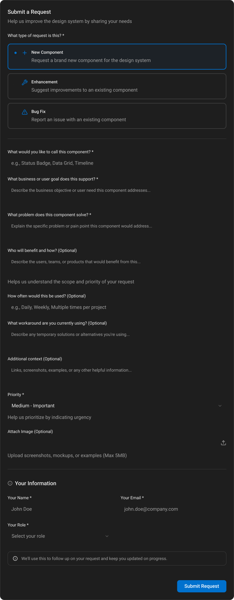

Design System Request Form
When teams couldn't easily tell me what they needed from the design system, I built a simple way for them to share their ideas—turning scattered requests into a clear roadmap I could actually manage
At a Glance
The Challenge
Managing an enterprise design system without a way to capture and organize requests from teams
As the manager of an enterprise design system, I faced a critical problem: there was no structured way for external teams—both engineers and designers—to submit requests for new components, report bugs, or suggest enhancements. Requests were coming in through emails, Teams messages, hallway conversations, and scattered across different channels. Important feedback was getting lost, priorities were unclear, and I had no visibility into what teams actually needed.
Teams were frustrated because they felt their requests weren't being heard. I was frustrated because I couldn't efficiently manage or prioritize the influx of requests. The design system couldn't scale without a proper process for capturing and organizing feedback. I needed a solution that would transform this chaos into clarity—a centralized system that would help me understand what teams needed, prioritize effectively, and demonstrate the value of the design system to the organization.
Scattered Requests
Requests coming through emails, Teams, and ad-hoc conversations
Lost Information
No centralized way to track or organize team requests
Priority Confusion
Difficult to understand what teams needed most urgently

Our Objectives
Creating a centralized request system that captures essential information and enables effective prioritization
Success Criteria
My Process: Designing for Information Architecture
Building a request form that captures the right information at the right time
Step 1: Understanding the Information Needs
Before designing the form, I needed to understand what information would be most valuable for managing requests. I analyzed the types of questions I found myself asking repeatedly: "What problem does this solve?" "Who will benefit?" "How urgent is this?" "What's the current workaround?" Each piece of information would help me prioritize and understand the scope of work.
- Identified the key questions I needed answered for each request
- Analyzed common request patterns and information gaps
- Mapped out the decision-making process for prioritization
- Considered what context would help teams communicate their needs effectively
Step 2: Designing the Request Form
I designed a form that guides users through providing essential context in a logical flow. The form starts with request type selection (New Component, Enhancement, Bug Fix), then progressively collects more detailed information. Each field serves a purpose in helping me understand the request's scope, impact, and priority.
- Created a clear request type selection to categorize requests upfront
- Designed progressive disclosure to avoid overwhelming users
- Included fields for business goals, problems solved, and user benefits
- Added optional fields for frequency, workarounds, and additional context
Step 3: Building the Admin Dashboard
The request form would be useless without a way to manage all incoming requests. I designed an admin dashboard that provides a global view of all requests, their status, priority, and sprint assignments. This dashboard became my command center for managing the design system's roadmap.
- Created summary cards showing total requests, submitted, in sprint, and completed
- Designed a filterable table view for detailed request management
- Enabled in-line editing of priority, status, and sprint assignments
- Provided quick access to request details and submitter information
- Connected form submissions to our UX team's MS Teams channel for instant notifications
One key feature I implemented was connecting the form submissions directly to our UX team's MS Teams channel. Every time someone submitted a request, I'd get notified immediately in Teams. This meant I never missed a request, and I could respond quickly to teams—even if I wasn't actively checking the dashboard. It transformed the form from a passive collection tool into an active communication channel.
Step 4: Testing with Real Teams
I tested the form with actual engineers and designers who would be using it. Their feedback helped me refine the language, clarify instructions, and ensure the form felt approachable rather than bureaucratic. The goal was to make submitting requests feel easy and valuable, not like filling out paperwork.
- Tested form clarity and completion time with real users
- Gathered feedback on field labels and instructions
- Validated that collected information was actually useful for prioritization
- Ensured the dashboard provided the visibility I needed
Request Type Selection
Making it easy for teams to categorize their requests from the start
Clear Categorization
The form starts with a simple but critical choice: what type of request is this? Teams can select from three options:
- New Component: Request a brand new component for the design system
- Enhancement: Suggest improvements to an existing component
- Bug Fix: Report an issue with an existing component
This upfront categorization helps me immediately understand the nature of each request and route it appropriately. Visual cards make the selection intuitive, and descriptions help teams choose the right option even if they're not sure of the terminology.
Capturing Essential Context
Collecting the information that helps me understand scope, impact, and priority
Why This Information Matters
Each field in the form serves a specific purpose in helping me manage requests effectively:
Component Name
Helps me understand what's being requested and check for existing components
Business Goal
Connects the request to organizational objectives, helping prioritize based on impact
Problem Statement
Clarifies the pain point being addressed, essential for understanding urgency
Who Benefits
Helps me understand scope and prioritize based on user impact
Usage Frequency
Indicates how often the component would be used, informing priority decisions
Current Workaround
Reveals the cost of not having the component, helping justify development effort
Priority and Additional Context
Enabling teams to communicate urgency and provide supporting materials
Making Prioritization Collaborative
The form includes a priority field that allows teams to indicate urgency. While I make the final prioritization decisions, understanding how teams perceive urgency provides valuable context. The form also includes:
- Priority Selection: Teams can indicate if a request is Low, Medium, High, or Critical
- Image Attachments: Teams can upload screenshots, mockups, or examples (up to 5MB)
- Additional Context: Space for links, examples, or any other helpful information
- Submitter Information: Name, email, and role for follow-up communication
This information helps me understand not just what's needed, but why it's needed and how urgently. The ability to attach images means teams can show me examples, current workarounds, or mockups that make their requests much clearer.
Admin Dashboard: The Command Center
A global view that transforms scattered requests into organized, actionable insights

Why the Dashboard Matters
The dashboard is where the value of collecting structured information becomes clear. At a glance, I can see:
Summary Statistics
Total requests, submitted, in sprint, and completed—giving me a high-level view of the request pipeline
Filterable Views
Filter by status to quickly see what's submitted, in progress, or completed
Detailed Request Table
See type, component name, submitter, date, status, priority, sprint assignment, and actions all in one place
In-Line Management
Update priority, status, and sprint assignments directly from the dashboard without opening individual requests
Quick Access to Details
View button on each row provides instant access to full request information when needed
Diving Deeper: Request Details
When I need to see the full context of a request, clicking "View" opens a detailed view that shows all the information teams provided. This includes:
- Complete Request Information: All the context teams provided—business goals, problem statements, usage frequency, and current workarounds
- Submitter Details: Contact information and role, making it easy to follow up with questions or updates
- Attached Files: Any screenshots or mockups teams uploaded to illustrate their needs
- Status History: Track how the request has moved through the pipeline
This detailed view is where all that structured information I collected becomes valuable. I can see everything at once, understand the full context, and make informed decisions about prioritization and implementation.

How This Helps Me Manage Requests
The benefits of collecting structured information and having a centralized dashboard
No More Lost Requests
Every request is captured in one place with all relevant context. I never have to dig through emails or Teams history to find what someone asked for. The information is there when I need it, structured and searchable.
Better Prioritization
With business goals, problem statements, usage frequency, and priority information, I can make informed decisions about what to work on first. I understand the impact and urgency of each request before diving into the work.
Sprint Planning Made Easy
The dashboard allows me to assign requests to specific sprints, track what's in progress, and see what's completed. I can plan capacity and set expectations with teams about when their requests will be addressed.
Visibility and Reporting
I can see at a glance how many requests are in the pipeline, what's been completed, and what's in progress. This helps me communicate the design system's value to leadership and demonstrate that we're responding to team needs.
Understanding Team Needs
By seeing who submits requests, what problems they're solving, and how often they'd use components, I gain insights into how the design system is being used and where it needs to grow. This informs the roadmap.
Better Communication
Having submitter information and contact details means I can follow up with teams, ask clarifying questions, and keep them updated on progress. Teams feel heard because their requests are tracked and acknowledged.
The Impact
Transforming request chaos into organized, actionable insights
Centralized Request Management
All requests now come through a single, organized system. No more lost emails or forgotten Teams messages. Every request is captured with full context, making it easy to reference later and ensuring nothing falls through the cracks.
Informed Prioritization
With structured information about business goals, problem statements, usage frequency, and priority, I can make data-driven decisions about what to work on first. The dashboard gives me the visibility I need to balance urgent needs with strategic work.
Improved Team Satisfaction
Teams feel heard because their requests are tracked, acknowledged, and visible. They can see the status of their requests and understand how priorities are set. The form makes it easy for them to provide all the context I need, reducing back-and-forth.
Efficient Workflow
The dashboard enables me to manage requests efficiently. I can quickly filter by status, update priorities inline, assign to sprints, and track progress—all without leaving the dashboard. This saves time and ensures I'm working on the right things.
Learnings & Reflections
Insights from building a request management system
What Worked Well
Collecting structured information upfront eliminated the need for follow-up questions. The dashboard's summary cards and filterable table view gave me exactly the visibility I needed. Teams appreciated having a clear place to submit requests and see their status.
What I'd Do Differently
I would add automated notifications to keep teams updated when their request status changes. I'd also consider adding a public-facing request board so teams can see what others have requested and upvote requests they also need.
Key Takeaway
The right information architecture makes all the difference. By thinking carefully about what information I needed to manage requests effectively, I created a system that not only captures requests but helps me prioritize, plan, and communicate progress.
The Complete System
From request submission to dashboard management—see how the system works end-to-end


Image Title
Image description will appear here...